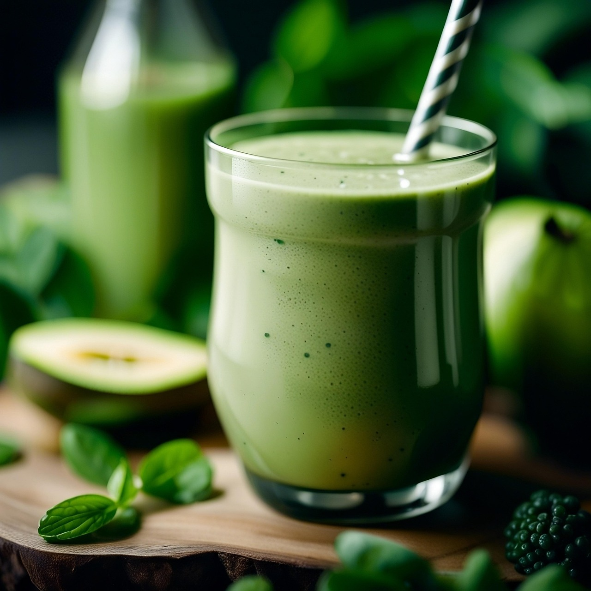

Breakfast Banana Green Smoothie
Home
Recipe
by mn on allrecipes.com

Image by Crafter Chef on Pixabay
Description
Easy and simple, you'll have this smoothie in no time. This smoothie is packed with nutrients and vitamins.
It's also perfect if you're in a hurry to get to work, rushing your kids to school (rushing yourself to school...like me),
or just craving a fresh and healthy drink to start your day. Organic maple syrup can be added instead of honey.
Ingredients
- 2 cups baby spinach leaves
- 1 banana
- 1 carrot, peeled and cut into large chunks
- 3/4 cup fat free Greek Yogurt
- 3/4 cup ice
- 2 tablespoons honey
Directions
- Gather ingredients.
- Peel carrot and cut into large chunks.
- Put everything into blender and blend until smooth.
- Enjoy!